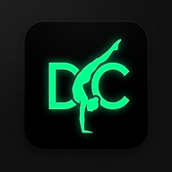

Gui Lemos Bio & Perfil ↗Decomposição Cinemática dos Movimentos:
1. L-Sit / V-Sit Inicial (00:01): Bloqueio articular completo de cotovelos e joelhos, flexão plantar rigorosa e depressão escapular ativa. Centro de massa estável entre os canes.
2. Press to Straddle Handstand (00:03 - 00:05): Subida em força pura e contínua sem balanço ou salto balístico. Compressão pélvica de iliopsoas e translação precisa dos ombros à frente para criar contrapeso.
3. Full Handstand Alinhado (00:11 - 00:19): Fechamento elegante unindo as pernas. Linha axilar aberta, elevação de serrátil e trapézio superior mantendo a vertical neutra por quase 10 segundos.
4. Descida Excêntrica em Compressão para L-Sit (00:21 - 00:25): Passagem de pernas em tuck/pike pass controlada em câmera lenta, amortecendo a gravidade e travando no L-Sit no ar sem tocar o chão.
5. Straddle Elbow Lever / Croc (00:28 - 00:31): Transição horizontal suave apoiando os cotovelos nos flexores/espinha ilíaca anterior.
6. One-Arm Croc Unilateral (00:32 - 00:39): O ponto alto do vídeo! Transferência total do centro de gravidade para o cane direito e sustentação com 1 único braço descolando o braço esquerdo por ~7 segundos. Torque anti-rotacional excepcional de oblíquos e quadrado lombar.
7. Saída e Aterrissagem (00:41): Retorno limpo e aterrissagem bípede com total controle motor.
Decomposição Cinemática dos Movimentos:
1. L-Sit / V-Sit Inicial (00:01): Bloqueio articular completo de cotovelos e joelhos, flexão plantar rigorosa e depressão escapular ativa. Centro de massa estável entre os canes.
2. Press to Straddle Handstand (00:03 - 00:05): Subida em força pura e contínua sem balanço ou salto balístico. Compressão pélvica de iliopsoas e translação precisa dos ombros à frente para criar contrapeso.
3. Full Handstand Alinhado (00:11 - 00:19): Fechamento elegante unindo as pernas. Linha axilar aberta, elevação de serrátil e trapézio superior mantendo a vertical neutra por quase 10 segundos.
4. Descida Excêntrica em Compressão para L-Sit (00:21 - 00:25): Passagem de pernas em tuck/pike pass controlada em câmera lenta, amortecendo a gravidade e travando no L-Sit no ar sem tocar o chão.
5. Straddle Elbow Lever / Croc (00:28 - 00:31): Transição horizontal suave apoiando os cotovelos nos flexores/espinha ilíaca anterior.
6. One-Arm Croc Unilateral (00:32 - 00:39): O ponto alto do vídeo! Transferência total do centro de gravidade para o cane direito e sustentação com 1 único braço descolando o braço esquerdo por ~7 segundos. Torque anti-rotacional excepcional de oblíquos e quadrado lombar.
7. Saída e Aterrissagem (00:41): Retorno limpo e aterrissagem bípede com total controle motor.
Análise Cinemática do Gesto Gímnico:
• Retorno Pendular & Alavanca: Excelente conservação de energia angular com extensão torácica na abertura do pêndulo.
• Compressão Pés na Barra: Pike agressivo aproximando a pelve da barra com flexores de quadril e reto abdominal sob tração balística.
• Straight-Arm Press Down: Extensão de ombro poderosa com grande dorsal e tríceps cabeça longa mantendo os braços esticados durante toda a subida.
• Troca Rápida de Punhos: Transição veloz da empunhadura por cima do eixo metálico no apoio frontal.
youtube.com/watch?v=5Hj0m-e98_8, o código é 5Hj0m-e98_8) e inserir no player. Ele carrega na hora direto pelo Google, sem ocupar armazenamento no celular nem no GitHub!
• Segunda (28/09): ✅ CrossFit (WOD Cleans, Squats, Jerks).
• Terça (29/09): ✅ Natação Regenerativa (500m) + Portagem Dinâmica (58kg).
• Quarta (30/09): ✅ EEFERP (Skills na Manjota executadas com nível circense de excelência) • Força reagendada para hoje.
• Quinta (01/10 - Executado): ✅ EEFERP (BMU, Oitavas, Ice Cream Makers, Vela na Argola, Banded KB Swing, KB RDL, Panturrilha) + 18h30 Dança Escola.
• Sexta (02/10): ⚡ Portagem de Força (63kg) + Complexo de Argolas (BMU/RMU strict).
A "pedrinha raspando": Translação posterior do menisco lateral (~9–11mm) associada a pico de compressão em flexão extrema de joelho (>110°) e rotação externa de tíbia.
Diretrizes:
1. Focar sempre em dominância de quadril (RDL, Hip Thrust) mantendo ângulo de tíbia estável.
2. Na dança de chão, evitar sentar sobre o calcanhar esquerdo em rotação forçada.
3. Alongar TFL e bíceps femoral pós-treino para abrir espaço articular no platô tibial.
• Ombro Direito (Supraespinhal + Acrômio operados): A cirurgia zerou a lesão mecânica, mas o SNC guarda o reflexo de proteção. O balanço para HS na paralela gera desaceleração brusca de alta inércia. Vamos reconstruir isso em aparelhos baixos com frenagem controlada.
• Tendões de Aquiles Bilaterais (operados há 8 anos): Exigem tolerância isométrica e excêntrica pesada de sóleo/gastrocnêmio para devolver complacência elástica sem medo de impacto.